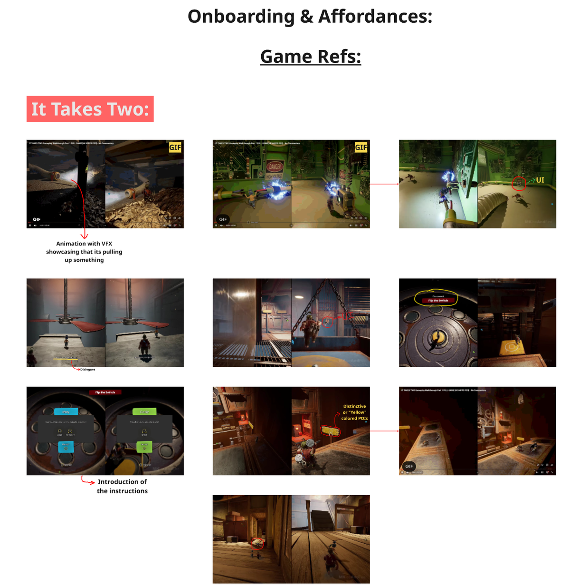
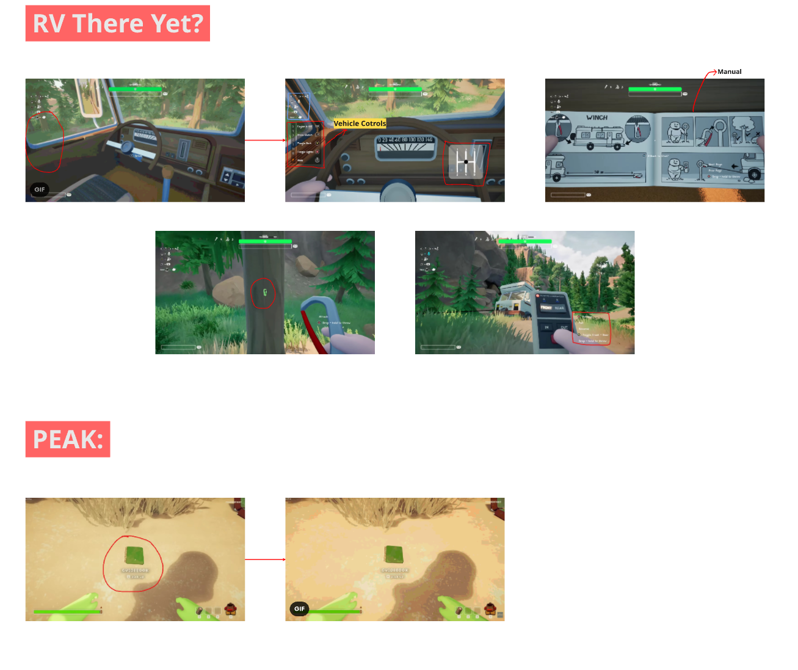
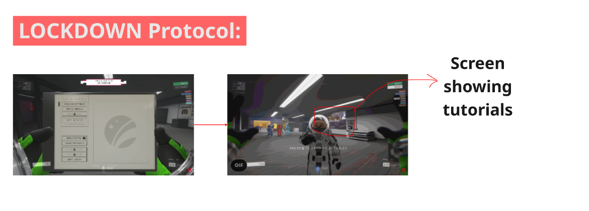
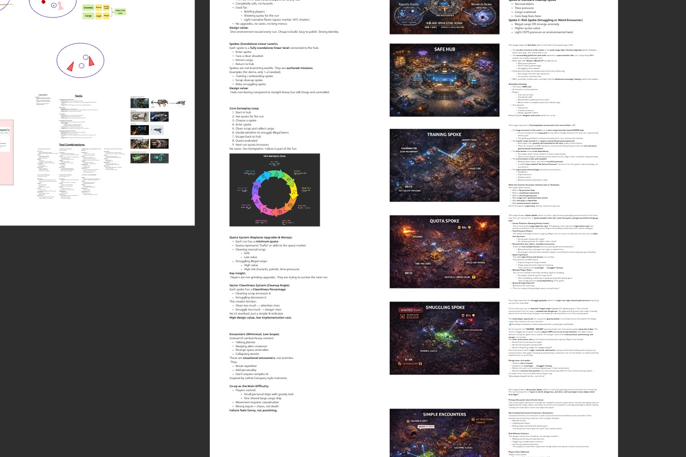
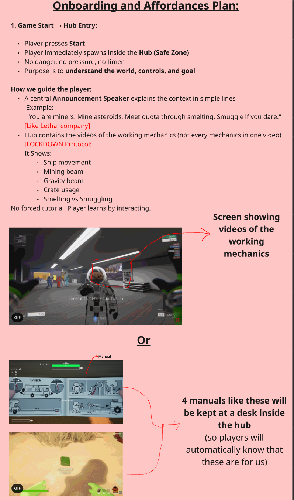
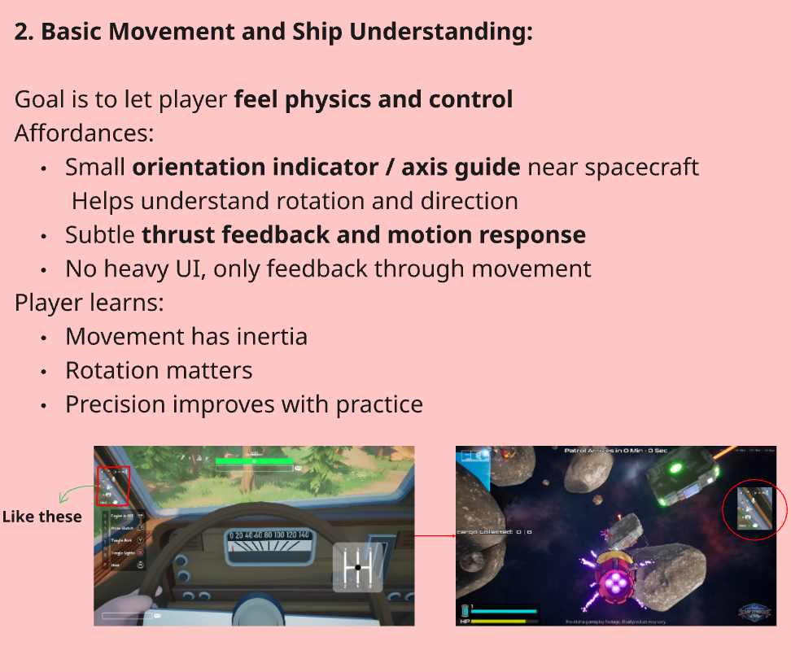
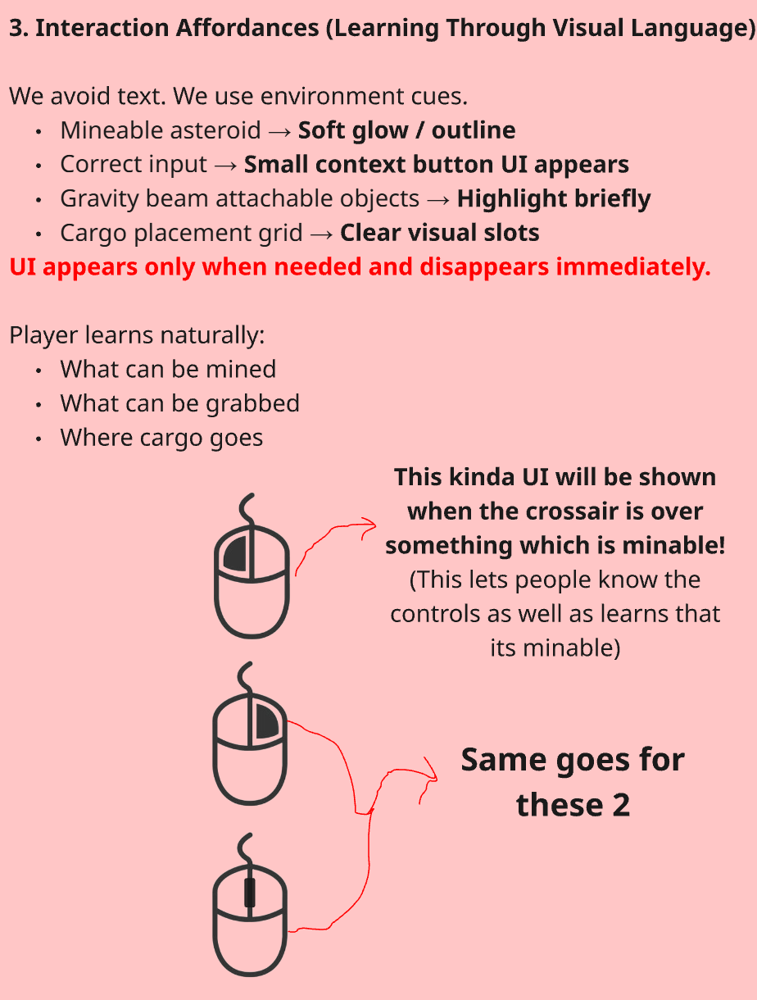

AOA: Space Scrap Smugglers
*Note: Due to NDA, internal documents and specific code logic cannot be shared. This case study focuses exclusively on my foundational system design, mechanic synergies, and level blockouts.*
Game Overview
AOA: Space Scrap Smugglers is a physics-driven, 4-player co-op asteroid mining simulator. Players pilot individual spacecraft equipped with Gravity Beams while collectively managing a massive, shared cargo carrier known as the FORGE.
The core challenge is not combat, but physics-based coordination under pressure. You and your friends are alien scrap dealers. You mine asteroids, dodge space police, and try to survive a chaotic "friendslop" environment.
The "Less is More" Approach
Initially, we designed multiple complex tool synergies (like using a Pulse Pusher alongside a Gravity Gun) to create distinct player roles. But "friendslops" are meant to be easy to pick up, and complex tool systems were causing players to overthink rather than have fun.
Multiple tools created too much cognitive load for a party game. Meanwhile, highly skilled solo players could still dominate the session by moving heavy cargo alone, breaking the co-op dependency.
We scrapped the multi-tool system entirely and focused purely on the Gravity Beam. I designed a physics rule where certain cargo is incredibly "heavy." 1 Player holding heavy cargo = Extremely slow movement. 2+ Players attaching beams = Fast, stabilized movement.
This simple rule forced vocal communication and created high-tension moments (e.g., getting chased by Space Police and dropping speed because a teammate panicked). A small, focused change drastically increased depth while cutting down the development load.

Visualizing the Mass Dependency physics rule in action.
Silent Onboarding & Affordances
Co-op audiences hate forced text dumps. If you pause their game to make them read instructions, their flow breaks and they rage quit. Furthermore, in a gritty space scavenger game, slapping UI everywhere kills immersion.


Utilizing environmental cues and diegetic onboarding inside the Hub.
I solved this by designing a multi-layer, silent onboarding system inside the Hub (our safe starting zone), relying purely on physical affordances:
- No UI Dumps: A central, diegetic Announcement Speaker explains context naturally: "You are miners. Mine asteroids. Meet quota. Smuggle if you dare."
- Looping Video Screens: Monitors in the environment show actual working mechanics (ship movement, Gravity Beam usage) without pausing the game.
- Visual Cues Over UI: Instead of glowing text, mineable asteroids emit soft glows. Interaction UI only appears when hovering perfectly over the action point.
- Natural Urgency: For the Smelter, instead of a boring UI timer, a siren activates and gates physically open, creating a natural panic window.
Hub & Spoke Architecture
Space is incredibly tough to design. The massive scale and lack of environmental anchors (no ground, no obvious paths) make it a nightmare to guide players. Furthermore, early non-linear layouts weren't scalable for new features.
I pushed for a Hub and Spoke level design. The Hub acts as the safe spawning zone where players understand their context, and from there they travel to distinct, scalable Spokes (Training, Quota, Smuggling). This solved our pacing problems and made the game infinitely expandable.

Miro board breakdown of the Hub-and-Spoke level structure.
The Training Spoke
I designed the top-down layout for Spoke 1 to be strictly linear so players wouldn't feel overwhelmed. It teaches one thing at a time: basic movement, riding the carrier grid through narrow spaces, carrying cargo, and finally using the gravity gun.


Top-down graybox layout for the Training Spoke (Left) and its structural legend (Right).
Linear Progression
The layout avoids confusing branching paths, guiding players directly from basic ship movement orientation into their first safe cargo extraction.
Lighting as Direction
To fix the "empty space" problem without adding UI, I used lighting to guide navigation. Closed spaces are kept dim, while bright spotlights in open areas naturally pull players toward the critical path.
Whimsical, Low-Scope Encounters
The game felt too empty, but adding traditional enemies and complex combat AI was completely out of scope for our timeline. Our Director requested a "whimsical" setting (playful, charming, imaginative), so we needed to inject energy without blowing up the budget.



.png)
Injecting personality without breaking the engineering budget.
- Situational Hazards: Instead of smart enemies, I pitched static traps like sleeping alien creatures. They require zero pathfinding and just sit there until a player makes a loud mistake.
- Expressive Cargo: I gave crates eyes and mouths. Heavy cargo visibly struggles when carried, and illegal cargo has a shady personality.
- Smiling Planets: Massive background planets with smiling faces that talk to you. They aren't enemies, but they add immense personality to the sector for zero animation cost.
- Player-Driven Chaos: The real danger comes from your friends messing up. Waking up a sleeping alien because your teammate boosted too hard creates hilarious, memorable moments.